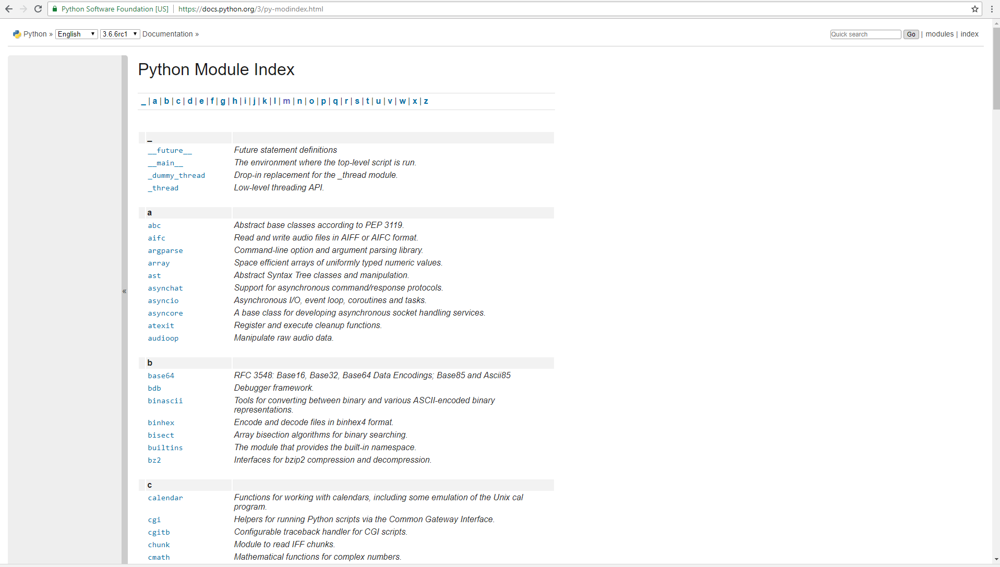
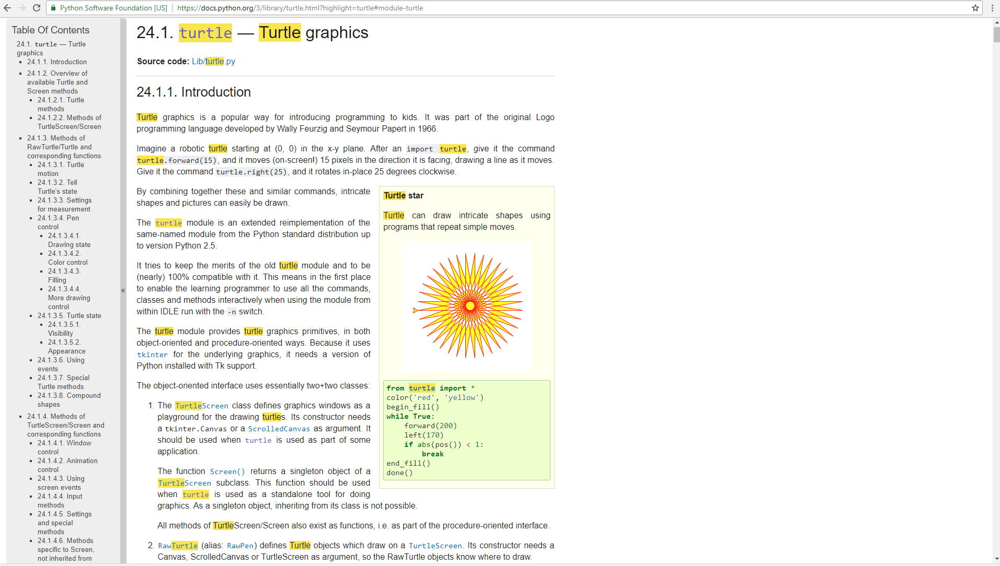

A module is a file containing Python definitions and statements intended for use in other Python programs. These are useful because they allow programmers to use previously written code in other programs without needing to copy all of it into the new program. There are many Python modules that come with Python as part of the standard library. Once we import the module, we can use things that are defined inside.
Here we are using turtle.Screen()and turtle.Turtle(), both of which are defined inside the
turtle module.
But what if no one had told us about turtle? How would we know that it exists? How would we know what it can do for us? The answer is to ask for help and the best place to get help about the Python programming environment is to consult with the Python Documentation.
The Python Documentation site for Python version 3 (the home page is shown below) is an extremely useful reference for all aspects of Python. The site contains a listing of all the standard modules that are available with Python (see Global Module Index). You will also see that there is a Language Reference and a Tutorial (mostly aimed at people who are already familiar with another programming language), as well as installation instructions, how-tos, and frequently asked questions. We encourage you to become familiar with this site and to use it often.
If you have not done so already, take a look at the Global Module Index. Here you will see an alphabetical listing of all the modules that are available as part of the standard library. Find the turtle module.
 You can see that all the turtle functionality that we will cover in class (see your reference card) there. However, there is so much more.
© Copyright 2018 LTC Tom Babbitt, Kyle King, Chip Schooler, Brad Miller, David Ranum, Originally created using Runestone Interactive.